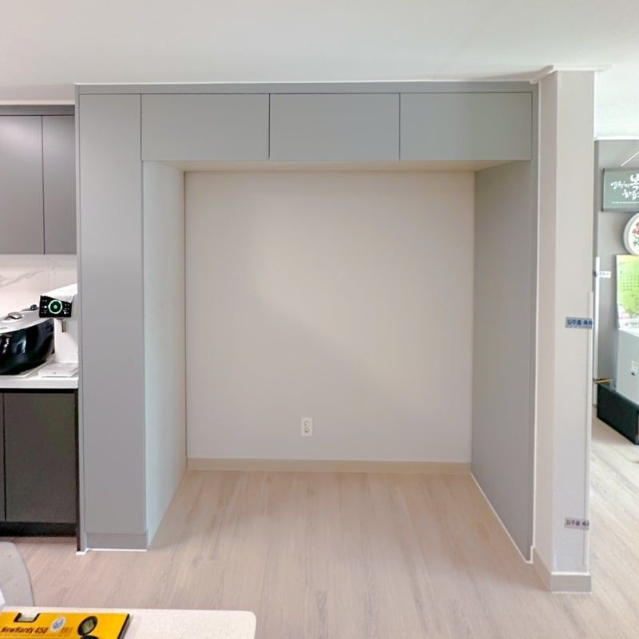
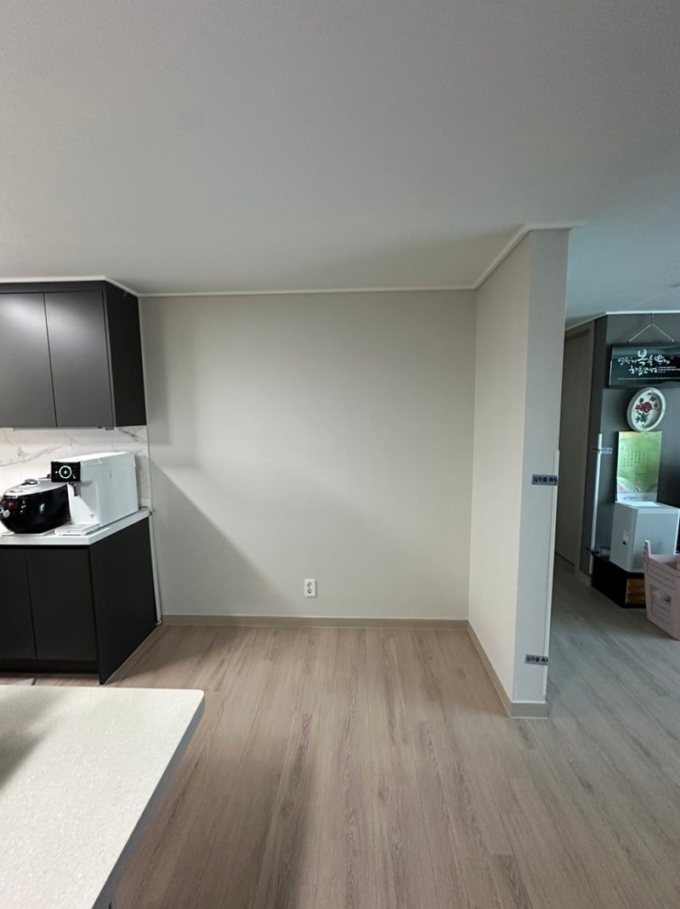
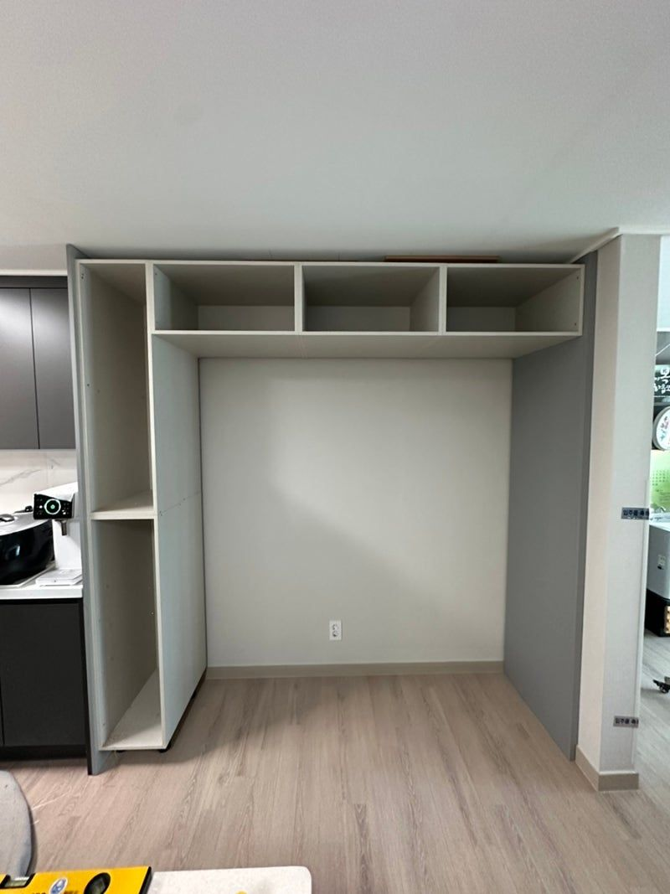
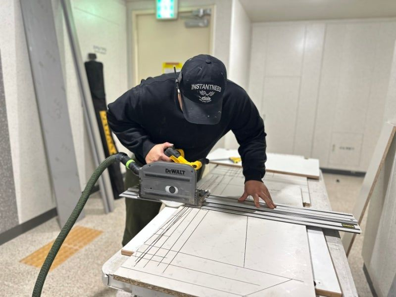

대표 작업 · 키친핏 맞춤제작
키친핏 냉장고장 맞춤제작
저희가 가장 많이 하는 일이에요. 냉장고 설치 가이드를 보고 높이, 깊이, 도어 두께까지 맞춰 설계하고, 직접 짜서 설치해요. 냉장고를 넣으면 도어 라인과 가구가 나란히 떨어지는 키친핏이 나와요. 남는 폭은 키큰장, 홈바장, 로봇청소기장으로 채우고 색상도 주방 가구에 맞춰요.
이럴 때 찾으세요
- 신축 아파트에서 냉장고장 옵션을 뺐을 때
- 비스포크·오브제처럼 키친핏 냉장고를 넣을 때
- 냉장고와 주방 가구 라인을 맞추고 싶을 때
- 렌지장·밥솥장·홈바장도 함께 넣고 싶을 때
1+1+1 · 4+4 · 4+3도어키큰장렌지장·밥솥장홈바장로봇청소기장
냉장고장 맞춤제작 100만원부터